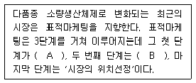
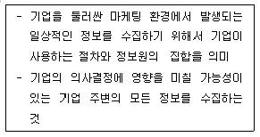
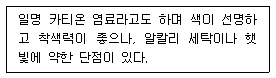
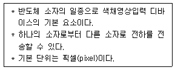
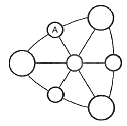
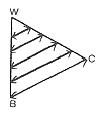

컬러리스트기사 (2007-03-04 기출문제)
1과목: 색채심리 마케팅
1. 소비자 생활유형 측정법의 하나로 심리도법이라고도 하며, 소비자를 일원적으로 파악하지 않고, 생활유형을 활동, 흥미, 외견으로 구분하여 측정하는 방법은?
- VALS 측정법
- AIO법
- 삼차원적 측정법
- 4P 측정법
(정답률: 알수없음)

2. 다음의 제시된 색 - 연상과 상징을 짝지은 것 중에서 다른 세 가지 것과 그 연상과 상징이 다른 하나는?
- 빨강 - 사과
- 노랑 - 병아리
- 파랑 - 바다
- 보라 - 신비로움
(정답률: 알수없음)
3. 다음 색채 선호와 관련된 내용 중 잘못된 것은?
- 일반적으로 연령이 낮을수록 원색 계열과 밝은 톤을 선호 한다.
- 성인이 되면서 단파장의 파랑, 녹색을 점차 좋아하게 되는 경우가 많다.
- 일반적으로 선호되는 색채와 특정 제품의 선호색은 동일 하다.
- 선호색은 성별, 연령별 집단에 따라 다른 차이를 보이기도 한다.
(정답률: 80%)
4. 브랜드 이미지 전략으로 옳지 않은 것은?
- 포괄적인 이미지 표현에 의한 친근감을 부여
- 시대적인 시장 세분화에 의한 고객욕구에 일치
- 상품특성이 잘 반영되고 신뢰감을 주는 이미지 구축
- 의미를 고려한 독창적이고, 타겟 고객들로부터 우호적인 이미지를 구축
(정답률: 알수없음)
5. 색채조절(color conditioning)의 실행을 위한 방법과 거리가 먼 것은?
- 색채의 심리학적 관점 이용
- 색채의 미학적 관점 이용
- 색채의 주관적 관점 이용
- 색채의 생리학적 관점 이용
(정답률: 알수없음)
6. 마케팅 조사를 위한 표본추출방법 중 확률표본추출방법에 해당되지 않는 것은?
- 단순무작위표본추출법
- 층화표본추출법
- 군집표본추출법
- 판단표본추출법
(정답률: 알수없음)
7. 소비자 의사결정과정에서 대안평가시 평가기준의 특성 설명 으로 틀린 것은?
- 평가기준은 제품유형과 소비자가 처한 상황에 따라 달라진다.
- 평가기준은 객관적일 수도 있고 주관적일 수도 있다.
- 평가기준의 수는 관여도와 상관없이 일정하게 정해져 있다.
- 평가기준은 제품 구매동기에 따라 다르게 작용한다.
(정답률: 알수없음)
8. 한 나라를 상징하는 국기는 그 나라의 풍토, 역사, 지리, 문화 등을 반영한다. 다음의 국기에 관한 설명 중 옳은 것은?
- 태극기의 흰색은 단일민족의 순수함과 깨끗함, 파란색과 빨간색은 분단된 민족의 통일에 대한 염원을 의미한다.
- 각국의 국기에서 대표적으로 사용되는 색 중 검정색은 고난, 의지, 역사의 암흑시대, 흑인 등을 의미한다.
- 독일, 오스트리아, 이탈리아, 프랑스 등은 3가지 색을 가로 또는 세로로 배열해 놓은 비콜로 배색을 국기에 사용한다.
- 각국의 국기가 상징하는 색 중 빨간색은 독립을 위한 조상의 피, 번영, 국부, 희망, 자유, 아름다움, 정열 등을 의미한다.
(정답률: 알수없음)
9. 색채조사의 연상법을 가장 잘 설명한 것은?
- 직접적으로 알아낼 수 없는 색채의 의미를 응답자가 연상한 언어들의 분석을 통해 알아내는 방법
- 보색의 관계를 통해 서로 연상되는 이미지를 그림으로 표현하여 색채의 의미를 알아내는 방법
- 응답자가 직접 손으로 그림을 그리게 하여 그 그림이 보여 지는 이미지를 분석함으로써 알아내는 방법
- 응답자와의 1:1면접을 통하여 색채에 내재된 의미내용을 분석하는 방법
(정답률: 알수없음)
10. 색채와 문화에 대한 설명으로 잘못된 것은?
- 1940년대 초반에는 군복의 영향으로 검정, 카키, 올리브 등이 사용되었다.
- 1950년대에는 전후의 심리적, 경제적 안정을 반영한 부드러운 파스텔 색조가 나타났다.
- 특정 문화권의 특색을 이루는 연상과 상징화는 체험을 통해 이루어진다.
- 역사적 유물과 유적에서 사용된 색채를 중심으로 제작연대를 측정하기는 어렵다.
(정답률: 알수없음)
11. 입지전적으로 기업을 크게 성장시킨 기업가의 성공비결을 알아보기 위아여 그 기업가에 대해 집중적인 연구를 하는 방법은?
- 상관연구법
- 실험법
- 사례연구법
- 내용분석법
(정답률: 알수없음)
12. 우리가 흔히 ‘사과’라는 사물의 색을 ‘빨간색’이라고 말하는 것은 대상의 표면색에 대한 무의식적 추론에 의한 것이다. 이러한 색을 무슨 색이라고 하는가?
- 기억색
- 지시색
- 주관색
- 지각색
(정답률: 알수없음)
13. 다음 중 괄호 ( A ), ( B )안에 들어갈 내용은?

- A : 제품선택, B : 시장표적화
- A : 시장 집중화, B : 시장차별화
- A : 시장 세분화, B : 시장표적화
- A : 시장 세분화, B : 시장확대화
(정답률: 알수없음)
14. 마케팅의 설명으로 잘못된 것은?
- 마케팅 전략은 장기적으로 전개 방법이 혁신적이어야 한다.
- 마케팅 전략은 소비자 또는 고객의 필요를 예측하여 구성 한다.
- 마케팅은 소비자 만족이라는 궁극적인 목표를 향하여 노력 하는 전략이다.
- 마케팅 전략은 시대적 상황이나 환경에 특별히 영향을 받지 않는다.
(정답률: 알수없음)
15. 프릴링(Frieling)의 정신분석적 색채실험인 채색된 빛을 이용한 환자들의 심리학적 반응이 바르게 설명된 것은?
- 빨강 : 운동신경의 움직임을 증가시킨다.
- 노랑 : 평온하게 하며 집중력을 증가시킨다.
- 파랑 : 혈압이 불규칙해지고 심장박동이 빨라진다.
- 녹색 : 빛을 발산하는 낮과 같은 작용을 한다.
(정답률: 알수없음)
16. 색채의 반응에 관한 다음 설명 중 잘못된 것은?
- 색채의 시각적 효과는 주관적 해석에 따라 영향을 받는다.
- 빨간색 원을 보다가 흰 벽을 봤을 때 청록색 원이 보이는 현상이 색채의 항상성이다.
- 동일한 단색광이라도 빛이 강할 때와 빛이 약할 때의 색감은 변화한다.
- 페흐너 효과(Fechner's effect)는 주관적인 색채경험이다.
(정답률: 알수없음)
17. 다음 중 인구통계학적 자료가 마케팅에 도움을 주는 이유가 아닌 것은?
- 소비자 계층의 묘사
- 시장을 세분화할 수 있는 정보 제공
- 물가지수 정보 제공
- 소비자 라이프 스타일 정보 제공
(정답률: 알수없음)
18. 다음에 제시된 제품과 그 색채 적용 사례들 중 안전한 제품 사용을 위한 바람직하지 않은 사례는?
- 휴대용 은색 가스버너의 점화장치를 미적인 면을 고려하여 은색으로 배색하였다.
- 노란색 전기 토스터기의 전원 버튼을 크고 둥근 모양으로 디자인하고 빨간색으로 배색하였다.
- 파란색 전기 청소기의 정지 버튼을 진한 핑크색으로 하고 돌출된 모양으로 만들었다.
- 정수기의 뜨거운 물이 나오는 꼭지를 빨간색으로 하고 차가운 물이 나오는 꼭지를 파란색으로 하였다.
(정답률: 알수없음)
19. 다음은 마케팅 정보시스템 중 무엇에 관한 설명인가?

- 내부정보시스템
- 고객정보시스템
- 마케팅의사결정 지원시스템
- 마케팅 인텔리젼서 시스템
(정답률: 알수없음)
20. 다음 중 컬러시장조사 설문 항목의 내용으로 부적합한 것은?
- 소비자의 니즈(needs)와 원츠(wants)
- 제품을 사용하는 장소(place)와 시간(occasion)
- 자사의 광고홍보 및 매체예산(media budget)
- 시대의 유행색과 디자인 트랜드(trend)
(정답률: 알수없음)
2과목: 색채디자인
21. 단시간 내에 급속도로 생겼다가 사라지는 유행을 의미하는 것은?
- 트랜드
- 포드
- 클래식
- 패드
(정답률: 알수없음)
22. 시지각에 대한 그룹핑(grouping)의 법칙을 가장 잘 설명한 것은?
- 개별적 요소를 분화시켜 지각하는 경향이다.
- 요소를 상호 연결시켜 집단화시키는 경향이다.
- 도형과 배경으로 분리시켜 지각하는 경향이다.
- 윤곽선을 중심으로 집단화시키는 경향이다.
(정답률: 알수없음)
23. 일정한 목적에 도달하는데 적합한 대상 또는 행위의 성질을 말하며, 원하는 작품의 제작에 있어서 실제의 목적에 알맞 도록 하는 것은?
- 합목적성
- 경제성
- 독창성
- 질서성
(정답률: 알수없음)
24. 처음 점이 움직임을 시작한 위치에서 끝나는 위치까지의 거리를 가진 점의 궤적을 무엇이라 정의하는가?
- 점
- 선
- 면
- 입체
(정답률: 알수없음)
25. 중세의 첨탑과 아치를 특색으로 하는 건축양식은?
- 로마네스크
- 바실리카
- 고딕
- 르네상스
(정답률: 알수없음)
26. 영국의 공예가로 예술의 민주화, 예술의 생활화를 주장해 근대 디자인의 이념적 기초를 마련한 사람은?
- 피엣 몬드리안
- 윌리엄 모리스
- 허버트 맥네어
- 오브리 비어즐리
(정답률: 알수없음)
27. 공간에서의 색채계획으로 적절하지 않은 것은?
- 보조색은 면적의 비례에서 5~10%를 차지한다.
- 장기체류의 공간은 색채배색이 두드러지지 않아야 한다.
- 색의 사용은 천장 - 벽 - 바닥의 순으로 어두워져야 한다.
- 디자인 분야별로 주조색의 선정방법은 다를 수 있다.
(정답률: 알수없음)
28. 메이크업과 빛의 관계가 잘못된 것은?
- 백열등 아래에서는 붉은색의 볼연지가 더욱 혈색있게 보인다.
- 메이크업은 조명의 색온도에 영향을 받으므로 적합한 색상을 고려한다.
- 형광등 아래에서는 붉은 색이 함유된 파운데이션과 볼연지로 혈색을 살려준다.
- 메이크업은 개인의 피부색에 따라 다르므로 조명에는 크게 영향을 받지 않는다.
(정답률: 알수없음)
29. 색채계획 과정에서 색채변별능력, 색채조사능력, 자료수집 능력은 어느 단계에서 요구되는가?
- 색채환경분석
- 색채심리분석
- 색채전달계획
- 디자인에 적용
(정답률: 알수없음)
30. 디자인 사조와 그 대표 작가들이 옳게 짝지어진 것은?
- 다다이즘 - 피카소
- 미래파 - 칸딘스키
- 야수파 - 시냐크
- 데스틸 - 몬드리안
(정답률: 알수없음)
31. 단청 이미지로 한국의 전통을 가진 제품을 디자인 하려고한다. 가장 적합한 색으로 짝지어진 것은?
- 천청색, 흑색
- 뇌록, 석간주
- 옥색, 휴색
- 소색, 하엽
(정답률: 알수없음)
32. 20대 초반 대학생들의 선호색을 고려하여 파란색 캐주얼 가방을 디자인 하였다. 이와 같은 색채 기획은 다음의 색채기획 방법 중 어떤 점을 고려한 기획인가?
- 문화권별 색채 선호를 고려한 기획
- 인구통계학적 특성을 고려한 기획
- 시장 가격을 고려한 기획
- 친환경적 색채를 고려한 기획
(정답률: 알수없음)
33. ‘형태는 기능에 따른다.’ 라는 말을 한 사람은?
- 루이스 설리반
- 빅터 파파넥
- 윌리엄 모리스
- 모홀리 나기
(정답률: 알수없음)
34. 포스트 모던 디자인의 특징이 아닌 것은?
- 대량생산
- 유머와 위트, 장식성의 회복
- 예술, 공예, 디자인의 장르 허물기
- 형태는 재미를 따른다.
(정답률: 알수없음)
35. 색채연구에서 자주 활용되는 의미분별법(Semantic Differenti al Method)에서 사용되는 척도는?
- 비례척도(Ratio Scale)
- 명의척도(Nominal Scale)
- 서수척도(Ordinal Scale)
- 거리척도(Interval Scale)
(정답률: 알수없음)
36. 환경친화적 디자인(Environment Friendly Design)을 실현하는 데 있어 고려해야 할 사항으로 적절치 않은 것은?
- 다양한 소재를 활용한 디자인
- 제품 수명 연장을 위한 디자인
- 재활용 디자인
- 효율적 수거를 위한 디자인
(정답률: 알수없음)
37. 다음 중 환경디자인 영역과 가장 거리가 먼 분야는?
- 도시디자인
- 건축디자인
- 조경디자인
- 이벤트 디자인
(정답률: 알수없음)
38. 디자인 보호 및 이용을 도모함으로써 디자인의 창작을 장려하여 산업발전에 이바지함을 목적으로 하는 법은?
- 저작권법
- 상표법
- 디자인보호법
- 실용신안법
(정답률: 알수없음)
39. 20세기 초 디자인의 근대화를 추구한 독일공작연맹에 대한 설명으로 잘못된 것은?
- 예술가, 건축가, 산업가를 포함한 디자인 진흥단체이다.
- 미술과 산업의 협력을 통해 제품의 질을 높이고자 했다.
- 제품의 규격화를 중시하였다.
- 월터 그로피우스를 중심으로 결성되었다.
(정답률: 알수없음)
40. 형태심리학자들에 의해서 제시된 시지각 법칙이 아닌 것은?
- 근접성의 원리
- 유사성의 원리
- 연속성의 원리
- 대조성의 원리
(정답률: 알수없음)
3과목: 색채관리
41. 비트맵 이미지를 확대해 보면 픽셀들 간의 날카로운 색조대비에 의한 계단모양의 단계들이 이미지의 가장자리를 따라서 생기는 것을 볼 수 있는데 이 날카로운 단계들의 중간색을 사이 사이에 만들어 주어 부드럽게 만들어 주는 것은?
- 안티앨리어싱(Antialiasing)
- 모아레(Moire)
- 디더링(Dithering)
- 크로마 키잉(Chroma keying)
(정답률: 알수없음)
42. 다음 중 색온도가 가장 낮은 것은?
- 주광색 형광등
- 정오의 태양
- 백열등
- 흐린 날의 하늘
(정답률: 알수없음)
43. 육안검색에 대한 설명으로 틀린 것은?
- 시료면, 표준면 빛 배경은 동일 평면상에 있는 것이 바람직하다.
- 자연광은 주로 남쪽 하늘 주광을 사용한다.
- 육안 비교 방법은 표면색 비교에 이용된다.
- 시료면 및 표준면의 모양이나 크기를 조정할 필요가 있는 경우에는 마스크를 사용한다.
(정답률: 알수없음)
44. 분광 반사율에 대한 설명으로 틀린 것은?
- 회색계통의 색들은 반사율이 동일하게 나타난다.
- 밝은 색일수록 전반적으로 반사율이 높다.
- 채도가 높은 선명한 색일수록 분광 반사율의 파장별 차이가 크다.
- 반사율은 색채 시료의 특성에 따라 다르게 나타난다.
(정답률: 알수없음)
45. 색에 관한 용어의 설명 중 틀린 것은?
- 휘도순응 : 시각계가 시야의 휘도에 순응하는 과정 또는 순응한 상태
- 명순응 : 3cd ㆍ m-2 정도 이상인 휘도의 자극에 대한 휘도 순응
- 색순응 : 암순응 상태에서 시각계가 시야의 색에 순응하는 과정 또는 순응된 상태
- 암순응 : 약 0.03cd ㆍ m-2 정도 이하인 휘도의 자극에 대한 휘도순응
(정답률: 알수없음)
46. CIE L*a*b* 색좌표계에 다음 색을 표기할 때 가장 밝은 노란색에 해당되는 것은?
- L* = 0, a* = 0, b* = 0
- L* = +80, a* = 0, b* = -40
- L* = +80, a* = +40, b* = 0
- L* = +80, a* = 0, b* = +40
(정답률: 알수없음)
47. 색료에 대한 설명으로 틀린 것은?
- 색료는 염료와 안료로 구분된다.
- 염료는 일반적으로 물에 용해된다.
- 유기안료는 무기안료보다 착색력, 내광성, 내열성이 우수하다.
- 백색안료에는 산화아연, 산화티탄, 연백 등이 있다.
(정답률: 알수없음)
48. 다음 설명에 가장 적합한 염료는?

- 반응성 염료
- 산성 염료
- 안료 수지 염료
- 염기성 염료
(정답률: 알수없음)
49. 어떤 색채가 매체, 주변색, 광원, 조도 등이 다른 환경하에서 관찰될 때 다르게 보여지는 현상은?
- 컬러 어피어런스(color appearance)
- 컬러 매핑(color mapping)
- 컬러 변환(color transformation)
- 컬러 특성화(color characterization)
(정답률: 알수없음)
50. 다음 중 CIE L*a*b* 색표계에서 a* 에 해당되는 색의 영역을 가장 옳게 나타낸 것은?
- red ~ blue
- yellow ~ blue
- red ~ green
- red ~ yellow
(정답률: 알수없음)
51. 등유 및 유동파라핀, 고형파라핀 등 석유제품의 색을 측정 하는 방법으로 표준색 유리와 시료와의 투과광을 비교하여 얻어지는 시료의 밝기를 표시하는 부호로서 그 수치는 +30(가장 밝은 것)에서 -16(가장 어두운 것)까지 분류하여 색을 측정하는 방법은?
- 세이볼트식 색 시험방법
- ASTM 색도법
- 로비본드 비색계에 의한 시험방법
- 탁도 측정방법
(정답률: 알수없음)
52. 관찰시야가 2도 시야에서 10도 시야로 넓어지면 명도와 채도는 어떻게 되는가?
- 명도와 채도가 모두 낮게 느껴진다.
- 명도는 높고 채도는 낮게 느껴진다.
- 명도와 채도가 모두 높게 느껴진다.
- 명도는 높고 채도는 높게 느껴진다.
(정답률: 알수없음)
53. 육안 조색을 할 때 작업면에서의 조도는 원칙적으로 몇 lx 이상으로 하여야 하는가?
- 200lx
- 400lx
- 800lx
- 1000lx
(정답률: 알수없음)
54. 다음에서 설명하는 것과 가장 관련있는 것은?

- CDP(Compact Disc Player)
- PDP(Plasma Display Panel)
- CCD(Charge Coupled Device)
- LCD(Liquid Crystal Display)
(정답률: 알수없음)
55. 해상도(resolution)에 관한 설명 중 옳은 것은?
- 화면에 디스플레이 된 색채 영상의 선명도는 해상도 및 모니터 크기와는 관계없다.
- ppi는 1인치 내에 들어갈 수 있는 픽셀 수를 말한다.
- 픽셀의 색상은 빨강, 시안, 노랑의 3가지 색상의 스펙트럼 요소들로 만들어진다.
- 최고 해상도(1280 X 1024)를 가지고 있는 디스플레이 시스템은 그보다 낮은 해상도를 지원하지 못한다.
(정답률: 알수없음)
56. 다음 중 CCM(Computer Color Matching)에 대한 설명으로 틀린 것은?
- CCM의 특징은 분광 반사율을 기준색에 맞추어 일치시키는 것이다.
- 분광 반사율을 이용한 것으로 광원에 따라 색채가 일치하기도 하고 달라지기도 한다.
- 사용되는 색료의 양을 정확하게 지정하여 발색에 소요되는 비용을 정확히 산출할 수 있다.
- 수십년의 경험과 기술을 필요로 하지 않으며 정보의 공유가 가능하다.
(정답률: 알수없음)
57. 그래픽 카드를 이용하여 모니터에서 디지털 색채 영상을 구성하는데 사용되는 최소 단위는?
- 픽셀(pixel)
- 비트(bit)
- 벡터(vector)
- 바이트(bite)
(정답률: 알수없음)
58. 인쇄에 관한 설명 중 틀린 것은?
- 인쇄잉크의 기본 4원색은 C(Cyan), M(Magenta), Y(Yellow), K(Black)이다.
- 인쇄용지에 따라 망점 선수를 달리하여 선수가 많을수록 인쇄의 품질이 높아진다.
- 오프셋(off set)인쇄는 직접 종이에 인쇄하지 않고 중간 고무판을 거쳐 잉크가 묻도록 되어 있다.
- 볼록판 인쇄는 농담조절이 가능하여 풍부한 색을 낼 수 있고 에칭 그라비어 인쇄가 여기에 속한다.
(정답률: 알수없음)
59. 색채 관측시 주의해야 할 사항으로 틀린 것은?
- 규정된 표준광원 아래에서 조명관측조건을 고려하여 관측 한다.
- 시편에 광선이 고르게 도달하도록 하고, 관측 전에 색채 적응이 일어나지 않도록 해야 한다.
- 관측 전에 충분히 눈을 휴식시켜 눈의 피로로 인한 색채편이 현상을 제거해야 한다.
- 한 개의 색채 관측이 끝나면 재빨리 다음 색채 관측을 하여 색순응이 일어나지 않도록 한다.
(정답률: 알수없음)
60. 기준광으로 조명했을 때에 같은 색인 2가지 시료에 대하여 시험광으로 조명했을 때 발생하는 시료의 색차를 나타내는 지수를 무엇이라 하는가?
- 색온도 지수(color temperature index)
- 연색평가 지수(color rendering index)
- 메타메리즘 지수(metamerism index)
- 색변이 지수(color inconsistancy index)
(정답률: 알수없음)
4과목: 색채지각론
61. 동일지접에서 두 가지 이상의 색광 또는 반사광이 1초 동안에 40~50회 이상의 속도로 번갈아 발생되면 그 색자극들은 혼색된 상태로 보이게 되는 혼색방법은?
- 동시혼색
- 계시혼색
- 병치혼색
- 감법혼색
(정답률: 알수없음)
62. 도로 안내 표지를 디자인할 때 가장 중점을 두어야 하는 것은?
- 배경색과 글씨의 보색대비 효과를 고려한다.
- 배경색과 글씨의 명도차를 고려한다.
- 배경색과 글씨의 색상차를 고려한다.
- 배경색과 글씨의 채도차를 고려한다.
(정답률: 알수없음)
63. 저녁 노을이 붉게 보이는 것은 빛의 어떤 현상 때문인가?
- 반사
- 굴절
- 간섭
- 산란
(정답률: 알수없음)
64. 밤하늘의 별을 볼 때 정면으로 보는 것보다 곁눈으로 보는 것이 더 잘 보이는 이유는?
- 눈의 망막의 맹점에는 광수용기가 없으므로
- 망막의 중심부에는 추상체만 있고, 주변망막에는 간상체가 많이 분포되어 있으므로
- 추상체와 간상체가 각기 다른 해상도를 갖기 때문에
- 추상체에 의한 순응이 간상체에 의한 순응보다 신속하게 발생하기 때문에
(정답률: 알수없음)
65. 하나의 색만을 변화시키거나 더함으로써 이미지 전체의 색조를 변화시킬 수 있다는 사실을 발견한 사람의 이름을 따서 명명한 효과는?
- 멕스웰 효과
- 베졸드 효과
- 푸르킨예 효과
- 헬름홀쯔 효과
(정답률: 알수없음)
66. 다음 중 심리적으로 마음이 가라앉는 침정감을 유도하는 색은?
- 난색 계열의 고채도 색
- 난색 계열의 저채도 색
- 한색 계열의 고채도 색
- 한색 계열의 저채도 색
(정답률: 알수없음)
67. 다음 중 동화효과와 관련성이 없는 것은?
- 베졸드 효과
- 줄눈 효과
- 리프만 효과
- 전파 효과
(정답률: 알수없음)
68. 다음 중 스펙트럼 전반에 걸쳐 비교적 가장 고른 반사율을 가지는 것은?
- 청색
- 녹색
- 회색
- 황색
(정답률: 알수없음)
69. 인종에 따라 눈의 색깔이 다르게 보이는 것은 눈의 어느 부분 때문인가?
- 각막
- 수정체
- 망막
- 홍채
(정답률: 알수없음)
70. 색의 면적효과에 대한 다음 설명 중 틀린 것은?
- 동일한 색이라도 면적이 커지면 명도가 증가된다.
- 동일한 색이라도 면적이 커지면 채도가 증가된다.
- 면적이 커질수록 색이 뚜렷해진다.
- 색견본을 보고 색을 고를 경우, 완성 후 예상과 동일하게 적용된다.
(정답률: 알수없음)
71. 밝은 회색과 어두운 회색의 경계 부분에서 밝은 회색은 더욱 밝게, 어두운 회색은 더욱 어둡게 보인다. 이러한 현상은?
- 색상대비
- 연변대비
- 채도대비
- 계시대비
(정답률: 알수없음)
72. 선글라스를 끼고 있는 동안 선글라스의 색이 느껴지지 않는 이유는?
- 무채순응 때문
- 색순응 때문
- 명암순응 때문
- 푸르킨예 현상 때문
(정답률: 알수없음)
73. 공간색이란?
- 맑고 푸른 하늘과 같이 끝없이 들어갈 수 있게 보이는 색
- 유리나 물의 색 등 일정한 부피가 쌓였을 때 보이는 색
- 전구나 불꽃처럼 발광을 통해 보이는 색
- 반사물체의 표면에 보이는 색
(정답률: 알수없음)
74. 다음 중 틀린 것은?
- 색의 진출과 팽창을 실험하기에 가장 적합한 배경색은 회색이다.
- 원색의 빨강 의상을 좀 더 무겁게 느끼게 하고 싶다면 밝은 회색을 가미하여 명도를 높여준다.
- 파장이 짧은 색상이 긴 색상에 비하여 느리게 움직이는 것처럼 느껴진다.
- 장파장 계열의 색상은 시간의 흐름을 길게 느끼게 한다.
(정답률: 알수없음)
75. 색의 대비현상에 관한 설명으로 가장 타당성이 낮은 것은?
- 하얀 바탕 위에 명도 5인 회색을 놓았을 때 회색이 명도 5보다 더 어둡게 보인다.
- 노란 바탕 위에 녹색을 놓았을 때 녹색에 약간 노란색 기미를 띤 것처럼 보인다.
- 선명한 파란 바탕 위에 연한 하늘색을 놓았을 때 하늘색의 채도가 낮아 보인다.
- 청록 바탕 위에 회색을 놓았을 때 회색이 붉은 색 기미를 띤 것처럼 보인다.
(정답률: 알수없음)
76. 잔상에 대한 다음 설명 중 틀린 것은?
- 양성 잔상과 음성 잔상으로 구분된다.
- 원래의 감각과 같은 질의 밝기나 색상을 가질 때 음성 잔상이라고 부른다.
- 원래의 감각과 반대의 밝기나 색상을 가질 때 음성 잔상이라고 부른다.
- 양성 잔상은 원래 색상과 보색관계에 있는 색으로 나타난다.
(정답률: 알수없음)
77. 다음 중 색을 지각하는데 있어 빛의 특성과 작용이 잘못 연결된 것은?
- 노란 바나나의 색 - 빛의 반사와 관계가 있다.
- 색유리를 통한 색 - 빛의 투과와 관계가 있다.
- 검은 도화지의 색 - 빛의 흡수와 관계가 있다.
- 하늘의 무지개 색 - 빛의 간섭과 관계가 있다.
(정답률: 알수없음)
78. 다음 중 가법혼색이 아닌 것은?
- 컬러 모니터의 색
- TV의 색
- 색 유리판을 여러장 겹칠 때의 색
- 무대조명에 의한 색
(정답률: 알수없음)
79. 다음 중 헤링의 색채지각설에 대한 설명으로 틀린 것은?
- 색채대립세포는 한 가지 색에 대해서는 흥분하고 다른 색에 대해서는 억제반응을 보이는 세포이다.
- 이 이론은 빨강, 노랑, 초록, 파랑을 기본적 색채감각으로 채택하는 생리적 4원색 이론과, 자극이 없는 검정이 바른(Positive)감각이라는 가정에서 출발된다.
- 세 가지 시세포질 가운데서 빨강/초록이나 노랑/파랑의 둘 중 하나가 결핍되면 각각 적록색맹이나 황청색명이 나타 난다.
- 빨강은 빛의 자극에 의한 이화작용에 의해서 지각되며, 초록은 빛의 자극에 의한 동화작용에 의해서 지각된다.
(정답률: 알수없음)
80. 딸기 잎 속에 가려진 빨갛게 익은 딸기를 잘 구분하지 못하는 색맹의 경우 어떤 시세포에 문제가 있는가?
- L 원추세포
- M 원추세포
- S 원추세포
- 막대세포
(정답률: 알수없음)
5과목: 색채체계론
81. 우리나라 고구려 시대 고분에는 사신도가 그려져 있다. 사신도의 현무와 같은 방위를 의미하는 요소는?
- 물(水)
- 불(火)
- 나무(木)
- 흙(土)
(정답률: 알수없음)
82. 다음의 NCS 표색계의 색채기호 중 벽돌색에 가장 가까운 색은?
- S1090 - R80B
- S3020 - R50B
- S8010 - Y20R
- S6040 - Y80R
(정답률: 알수없음)
83. 역사적 인물과 색채관이 옳게 서술된 것은?
- 서양문학에서 최초로 색 질서를 시도한 사람은 소크라테스 이다.
- 헤링의 대립색 개념은 오스트발트 표색계와 NCS에 적용되었다.
- 뉴튼의 반대색은 노랑 - 보라, 오렌지 - 파랑, 빨강 - 초록이다.
- 슈브럴은 일곱 개의 기본색을 음악 스케일에 따라 질서화 시켰다.
(정답률: 알수없음)
84. 먼셀 색체계의 색상환에서 서로 마주보고 있는 색으로 배색했을 때 어떤 효과를 볼 수 있는가?
- 명도대비
- 채도대비
- 보색대비
- 색조대비
(정답률: 알수없음)
85. 수정먼셀 표색계의 표준색표 구성에 대한 설명으로 맞는 것은?
- 명도 0과 명도 10에 해당하는 검정과 흰색을 실재하는 색으로 N0 에서 N10 까지의 명도단계를 가진다.
- 채도는 /1, /2, /3, /4, /5, /6, /7 …, /14 등과 같이 1단위로 되어 있다.
- 100색상환으로 구성되어 있으며, R의 경우 1R이 순색의 빨강에 해당한다.
- 40색상에 대한 명도별, 채도별로 배열한 등색상면을 1장으로 하여 40장의 등색상면으로 구성되어 있다.
(정답률: 알수없음)
86. 다음 중 연결이 잘못된 것은?
- ISCC - 전미색채협의회
- PCCS - 독일공업규격
- NBS - 미국국가표준국
- NCS - 스웨덴색채연구소
(정답률: 알수없음)
87. 한국산업규격(KS)의 색명에 관한 설명으로 틀린 것은?
- 색이름을 계통색 이름과 관용색 이름으로 구별한다.
- 유채색의 수식형용사로는 선명한, 흐린, 탁한, 밝은, 어두운, 진(한), 연(한)이 있다.
- 관용색 이름에는 수식 형용사를 사용할 수 없다.
- 무채색의 수식 형용사로는 ‘밝은’, ‘어두운’ 이 있다.
(정답률: 알수없음)
88. 다음 그림은 비렌의 색삼각형이다. A 에 들어갈 용어는?

- TINT
- TONE
- GRAY
- SHADE
(정답률: 알수없음)
89. 먼셀 색입체의 설명으로 틀린 것은?
- 수직단면은 같은 색상이 나타나므로 등색상면이라고도 한다.
- 수직단면은 유사 색상의 명도, 채도변화를 한눈에 볼 수 있으며, 가장 안쪽의 색이 순색이다.
- 수평으로 자르면 같은 명도의 색이 나타나므로 등명도면이라고도 한다.
- 수평단면은 같은 명도에서 채도의 차이와 색상의 차이를 한눈에 알 수 있다.
(정답률: 알수없음)
90. 5R 9/2와 5R 3/8인 색은 명도와 채도 측면에서 볼 때문∙스펜서의 어느 조화원리에 해당하는가?
- 유사조화(similarity)
- 동등조화(identity)
- 대비조화(contrast)
- 제 1 부조화(1st ambiguity)
(정답률: 알수없음)
91. CIE 색도도에서 순수파장의 색은 어디에 위치하는가?
- 불규칙적인 곳에 위치한다.
- 중심의 백색광 주변에 위치한다.
- 말발굽형의 바깥 둘레에 위치한다.
- 원형의 형태로 백색광 주변에 위치한다.
(정답률: 알수없음)
92. 혼색계의 특징이 아닌 것은?
- 정확한 색의 측정이 가능하다.
- 빛의 가산혼합의 원리에 기초하고 있다.
- 수치로 구성되어 감각적인 색의 연상이 가능하다.
- 수치로 표시되어 변색, 탈색의 물리적 영향이 없다.
(정답률: 알수없음)
93. 오스트발트 표색계의 색상표기 방법은?
- 색상기호 + 흑색량 + 백색량
- 색상기호 + 백색량 + 흑색량
- 순색량 + 백색량 + 흑색량
- 백색량 + 흑색량 + 색상기호
(정답률: 알수없음)
94. 오스트발트 표색계에서 다음의 사선이 나타내는 것은?

- 등백색계열
- 등흑색계열
- 등가색환계열
- 등순색계열
(정답률: 알수없음)
95. NCS 표색계의 설명 중 틀린 것은?
- NCS 표색계의 기본개념은 헤링(Edward Hering)의 ‘색에 대한 감정은 자연적 시스템’에 연유한다.
- NCS 표색계의 창시자는 하드(Anders Hard)이고, 법적권한은 스웨덴 표준연구소에 있다.
- NCS 표색계는 흰색(W), 검정색(S), 노랑(Y), 빨강(R), 파란색(B), 녹색(G)의 6가지 기본색을 기초로 한다.
- NCS 표색계는 보편적인 자연색이 아니고, 유행색이 변하는 Trend Color에 중점을 둔다.
(정답률: 알수없음)
96. CIE L*u*v* 색좌표를 바르게 읽은 것은?
- L*은 명도차원이다.
- u*와 v*는 색상축을 표현한다.
- u*는 빨간색 - 파란색 축이다.
- v*는 value 축이다.
(정답률: 알수없음)
97. 미도에 관한 설명으로 잘못된 것은?
- 미도 M이 0.5이상 되면 그 배색은 좋다고 본다.
- 균형있게 선택된 무채색의 배색은 유채색 배색에 못지않는 아름다움을 나타낸다.
- 동일색상은 조화가 좋다.
- 색상, 채도를 일정하게 하고 명도만 변화시키는 경우는 많은 색상을 사용한 것보다 미도가 낮다.
(정답률: 알수없음)
98. 오스트발트 색체계 기호표시인 2Ppa의 순색 함량은? (백색량 p 3.5, a 89 / 흑색량 p 96.5, a 11)
- 7.5%
- 25.5%
- 65.5%
- 85.5%
(정답률: 알수없음)
99. DIN 색체계에서 어두움의 정도에 해당하는 것은?
- T
- S
- D
- R
(정답률: 알수없음)
100. 전통색명 앞에 붙어 톤을 서술하는 한자와 그 톤의 서술이 잘못 연결된 것은?
- 선(鮮) - 밝은
- 순(純) - 해맑은
- 회(灰) - 칙칙한
- 담(淡) - 매운 연한
(정답률: 알수없음)